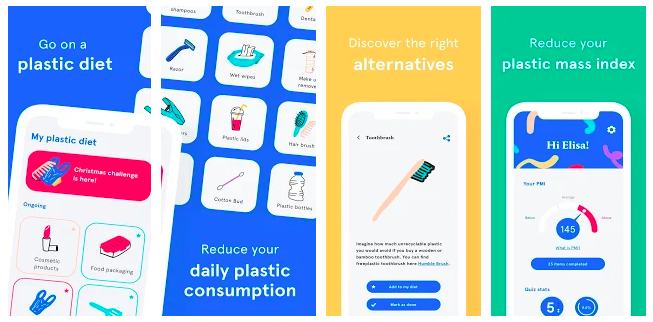

My Little Plastic Footprint
My Little Plastic Footprint is a mobile app that helps reduce daily plastic consumption. It also provides users with alternative options to items that they are currently using while informing them on the effects that each item can bring to the consumer and the environment. To reduce their plastic mass index, users can select various items that they plan to stop using and shift to using more sustainable options, then add those selected items to their ongoing or completed items. Once they’ve completed more items, the users plastic mass index decreases. The plastic mass index calculates the user’s plastic footprint. The fewer the number, the less user’s contribute to waste, while the higher the number, the more user’s contribute to waste. The index is separated into three sections which are: below, average, above. As a whole, the use of plastic is integrated into our daily lives from the toothbrush that we use to the cups we get from buying our daily dose of coffee. Without realizing, some plastic does get into our system which may cause health problems such as cancer and heart disease. Plastic does not biodegrade, so when plastic gets thrown out to the environment, it can negatively impact the lives of animals such as fish and seagulls. Being plastic conscious is important because it will help reduce pollution and decrease the negative effects on the environment. This app is effective in terms of educating and bringing awareness on plastic consumption, along with providing alternative products that users can purchase. However, I feel like the gamification can be improved. Currently, users can add the products they wish to stop using and then the plastic mass index gets updated. The app can make it a more fun experience by incorporating a pop-up of various emojis such as a smiley face when the user completes a certain item. The meter can be more engaging if it looks like a plastic bottle or a footprint to make the experience more visually interesting. Users may also need more of an incentive to keep using the app and build a habit of maintaining the non-use of plastic material as well. A daily reminder may help solve this problem. I feel like this app gives a mutual feeling of satisfaction, but can have the potential for a more positive experience.